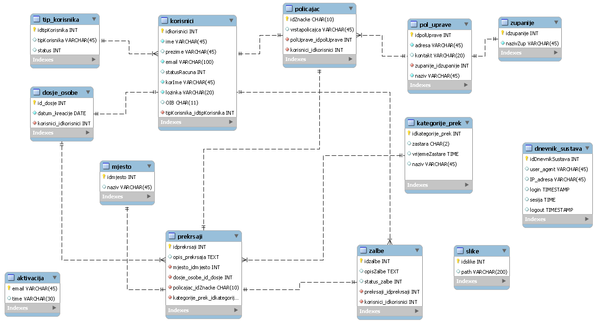

Opis projektnog zadatka
ePrekršaji
Kratak opis projekta: Sustav služi za evidentiranje prekršaja
Uloge- Neregistrirani korisnik
- Registrirani korisnik
- Policajac (Moderator)
- Administrator
- Definira policijske uprave (svaka uprava spada u određenu županiju) i dodjeljuje svakoj policijskoj upravi policajce.
- Administrator vidi statistiku korištenja sustava, pogrešnih/ispravnih prijava, po korisnicima vremenskom periodu (od - do).
- Definira kategorije prekršaja (krađa, pogrešno parkiranje, ubojstvo, …) te za svaku kategoriju definira da li odlazi u zastaru i ako da za koliko vremena.
- Administrator vidi ako ima korisnika kojima je danas otišao prekršaj u zastaru i šalje svima mail notifikaciju.
- Unosi prekršaj blalalal u dosje osobe (OIB je jedinstveni identifikator pod kojim se vode osobe). Svaka osoba za koju se unosi prekršaj mora biti registrirana. Za svaku osobu postoji dosje sa popisom svih prekršaja.
- Jedan zapis se sastoji od informacija u kojem mjestu, županiji (automatski se vadi na temelju županije u kojoj radi policajac) u koje vrijeme i datum je prekršaj počinjen, te opis sa prilozima (galerija slika (min 3), izjave očevidaca (pdf dokument)) i kategorija. Prilikom unosa svakog prekršaja bilježi se koji policajac je to unio.
- Može prihvatiti ili odbiti žalbu. Policajac vidi sve žalbe pristigle za prekršaje koje je on evidentirao i njihov status (zaprimljena, prihvaćena, odbijena).
- Policajac vidi statistiku žalbi i prekršaja po korisnicima, te prekršaje po županijama i kategorijama. Svi pregledi se baziraju na vremenskom periodu (od - do).
- Kod registracije mora unijeti svoj OIB. Može pregledavati svoj dosje.
- Može podnijeti žalbu za određenu evidenciju prekršaja, unosi tekst žalbe i može priložiti dokaz koji dokazuje da nije počinio neki prekršaja (npr. slika sa datumom).
- Može vidjeti statistiku svih prihvaćenih, odbijenih žalbi. Može filtrirati po svim prekršajima koje su otišle u zastaru ili datumski sa ispisom kada budu otišle u zastaru.
- može vidjeti popis županija, policijskih uprava i djelatnika.
Opis projektnog rješenja
Projekt je realiziran kroz četiri glavna sučelja a to su Neregistrirani i registrirani korisnik te moderator i administrator. Svako od tih sučelja je zaseban korisnik sa određenim ovlastima sa kojima može odrađivati razne zadatake/probleme na sustavu. Tijekom izvršavanja projektnog zadataka koristio sam puno materijala iz zadaća, napravljenih od strane a asistenata te materijalima prezentiranih od strane profesora na predavanju. Također je dosta pomogao i "google" pristup di sam našao različite tutoriale za generiranje XML-a , JSON-a, "ticking clock" preko jquery te upiti za SQL. Aplikacija se nalazi u nekoliko većih cijelina, podjeljenih u mape od kojih su najbitnije "skripte" i "views" za većinu funkcionalnosti aplikacije.
Bitne odrednice
Cijeli sustav se zasniva na bazi podataka koja je zapravo temelj svih funkcionalnosti. Centar baze podataka je tablica prekršaji koja zapravo spaja sve ostale tablice i grane u jednu cijelinu.
- aktivacija
- dnevnik_sustava
- dosje_osobe
- kateogrije_prek
- korisnici
- mjesto
- policajac
- pol_uprave
- prekrsaji
- slike
- tip_korisnika
- zalbe
- zupanije
Era model
Popis i opis skripata
- korisnici.json - JSON datoteka koja sadrži sve korisnike, potrebna kod AJAX provjera validacije
- pol_uprave.json - JSON datoteka koja sadrži sve policijske uprave, potrebna za neregistriranog korisnika - AJAX
- policajac.json - JSON datoteka koja sadrži sve policajce, potrebna za neregistriranog korisnika - AJAX
- zupanije.json - JSON datoteka koja sadrži sve zupanije, potrebna za neregistriranog korisnika - AJAX
- pomak.xml - XML datoteka za pomak vremena
- baza.class.php - php skripta sa funkcionalnostima spajanja na bazu te extended klasom za logiranje sutava u dnevnik
- foundation.css - css foundation 5.0 frontend okvira koji je korišten u izradi projekta
- main.css - css sa određenim stiliziranom postavkama rađenim ručno za određene dijelove
- foundation.min.css - standardni minimalizirani css foundation razvojnog okvira
- normalize.css - css resetovi
- humans.txt - kreatori foundationa
- index.html - primjeri foundation frameworka
- robots.txt - indeksiranje
- fpdf.php - biblioteka sa funkcijama potrebnim za geneiranje pdfova
- font - datoteka sa fontovima koje podržava generator
- docs - detaljno opisan plugin
- eramodel.png
- mup-logo.png
- navigacijski.jpg
- foudnation - mapa koja sadrži sve foudnation *.js datoteke
- vendor - mapa koja sadrži jqeury i vendorske dodatke za founadtion
- foundation.min.js - glavni foudantion javascript potreban za funkcionalnosti (drop down buttons, modals..)
- lklancir_jquery.js - jquery funkcionalnosti razrađene za projekt ( validacija , AJAX, datatables...)
- .htaccess - putanja to htpasswd
- .htpasswd - password za auth
- korisnici.php - skripta popis korisnika
- recaptcha.lib.php - google recaptcha (validacija)
- aktivacija.php - skripta koja odrađuje aktivaciju korisničkih računa
- banUnban.php - skripta koja odrađuje aktivaciju/deaktivaciju računa - administrator
- generiranjeKorisnika.php - skripta koja se aktivra kod AJAX zahtjeva te preko json datoteke korisni.json provjerava zauzetost emaila / korisničkog imena
- generiranjePopisa.php - skripta koja generira ostale JSON datoteke
- pdfGen.php - skripta zadužena za generiranje PDF-a dnevnika zapisa
- prijavaOdjava.php - skripta zadužena za stvaranje sesija te rukovođenje prijava i odjava
- zaboravljenaLozinka.php - skripta koja provjerava proslijeđene podatke te šalje mail sa novom lozinkom i update baze
- zalbeStatus.php - skripta koja odrađuje prihvaćanje ili odbijanje žalbe - moderator
- zastara.php - skripta koja provjerava da li na današnji datum i iznad postoji koji prešaj da odlazi u zastaru -
- administrator.php -glavno sučelje administratora, menađment korisnika i pregled prekršaja u zastari
- administratorKategorijePrekršaja -sučelje za CRUD - kategorije prekršaja
- administratorPolUprave -sučelje za CRUD - policijske uprave
- administratorPolicajci -sučelje za CRUD - policajaci
- administratorPostavke -sučelje za konfiguraciju sustava, virutalno vrijeme, JSON, pregled logova
- administratorStatistika sučelje za pregled statistika
- greske.php -lovi id greške te ispisuje odgovorajuću poruku upozorenja
- moderator.php -glavno sučelje moderatora - pregled žalbi za obradu
- moderatorStatistika.php -sučelje za pregled statistike vezane uz žalbe
- moderatorUnesiPrekršaj sučelje za unos prekršaja određenog korisnika (pristupa preko moderator.php)
- moderatorUnesiPrekršajForma -forma za unos prekršaja (pristupa preko moderatorUnesiPrekršaj.php
- mojetemplate.php -template korišten kod bržeg c/p novi stranica (neki standarni okvir)
- odjava.php -skripta za odjavu korisnika (brisanje sesijskih podataka i pisanje u log)
- popis.php -skripta do prventveno namjenjena neregistriranom korisniku (prema zadataku) te pregled zupanija,pol uprava i policajaca
- prijava.php -sučelje za prijavu korisnika, stvaranje sesijskih podataka, izgubljana lozinka
- prijavaOdjavaView.php -skripta koja se uključi na svaku stranicu aplikacije te određuje ovisno o tekućoj sesiji pregled navigacije za prijavu odnosno odjavu
- registracija.php -forma za registraciju novog korisnika, validacija preko serverske strane (php) i jqeury (AJAX)
- registrirani.php sučelje registriranog korisnika, pregled svojeg dosjea, te pregled/statistika žalbi
- registriraniStatistika -statistika pregleda žalbi (od - do)
- registriraniZalbe -unos žalbe na određeni prekršaj (preko dosje u registrirani.php)
- sat.php - jquery sat (ticking)
- uspjesi.php -skripta koja vraća poruku da je akcija uspješno izvršena
- vrijeme.php -skripta koja odrađuje pomak vremena te je korištena na ostalim stranicima zbog sata i ostalih funkcionalnosti pomaka vremena
Navigacijski dijagram
Popis i opis korištenih tehnologija
- Netbeans IDE 7.4 ravojno okruženje
- Sublime Text Editor
- PHP
- HTML / CSS
- Javascript